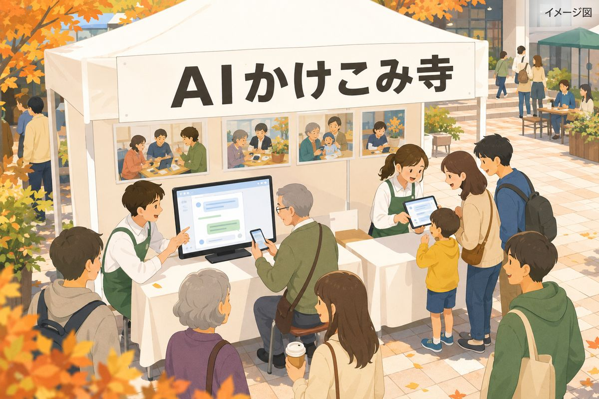

11/3（火・祝）星ヶ丘ミライテラスマルシェに出店
AIとおしゃべり
体験イベント
お買い物のついでに、AIとおしゃべりしてみませんか。はじめての方も、どうぞ気軽にお立ち寄りください。

ブースでできること
- 1AIとおしゃべり体験ブースの前で、AIが声で話しかけます。パソコンに向かって話しかけると、AIが声で答えます。
- 2スマホ操作のお手伝いChatGPT（チャッピー）のアプリを入れる、いらないアプリを消す、設定のご相談など。アプリを入れるところまでお手伝いします。
- 3活動のご紹介毎月ひらいている無料のAI教室や、これまでの活動を写真でご紹介します。
混み合うときは、少しお待ちいただくことがあります。
開催概要
- 日時
- 2026年11月3日（火・祝）10:00〜16:00
- 会場
- 星が丘テラス（名古屋市千種区星が丘元町16-50）
地下鉄東山線「星ケ丘」6番出口から徒歩2分 - 出店名
- スマホではじめてのAI体験｜AIかけこみ寺
- 参加費
- 無料（申込はいりません）
- 持ち物
- スマホのお手伝いを希望する方は、ご自分のスマホ
- 雨天
- 雨のときは中止です（主催者が前日15時までに決めます）。予備日はありません。
毎月の教室もあります
名古屋市西区の西生涯学習センターで、毎月AI教室をひらいています（参加無料）。
教室の日程を見る